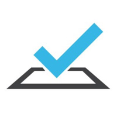
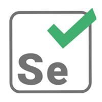
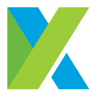

frameworks & tools
the toolkit

testcafe
Node.js-based end-to-end testing. No WebDriver required — runs straight
in the browser. Great cross-browser support out of the box.
view notes →
cypress
Fast, reliable browser testing with real-time reloads and
an excellent debugging experience. My go-to for modern web apps.
view notes →

selenium
The industry standard for browser automation. Used across multiple
companies and projects — deep experience with WebDriver patterns.
view notes →

katalon
All-in-one testing platform for web, API, and mobile. Good entry point
for teams building automation maturity from scratch.
view notes →

postman
API testing and collection management. Paired with Newman for
CI integration and automated API regression suites.
view notes →
ruby / cucumber
BDD-style automation with Gherkin. Used at MRI Software to build
readable, stakeholder-friendly test suites at scale.
view notes →